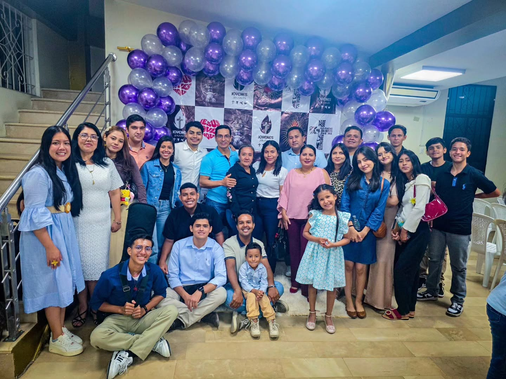
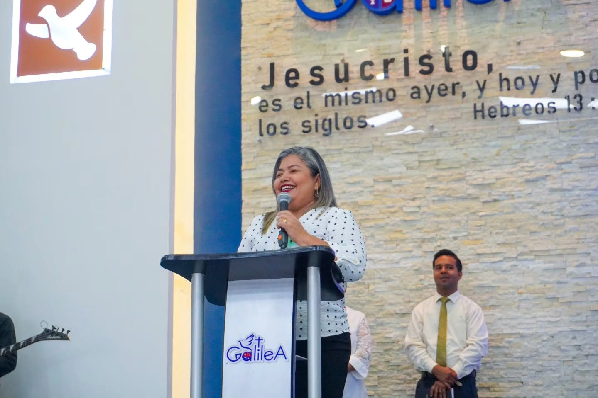

Iglesia Cuadrangular Galilea nació con el propósito de compartir el amor de Jesucristo a través de una comunidad auténtica, cercana y llena de esperanza. Nuestra misión es ver vidas transformadas, familias restauradas y una generación que impacte al mundo con el evangelio.
Hacer discípulos que amen a Dios y sirvan a su prójimo.
Ser una iglesia relevante que transforme comunidades.
Amor, integridad, fe, servicio y excelencia.
Un lugar donde todos son bienvenidos y valorados.
Así nació y creció Iglesia Cuadrangular Galilea.
En 1956 inició la Obra del Evangelio Cuadrangular en Ecuador, con la llegada del reverendo Arthur Gadberry y su esposa, misioneros enviados desde Los Ángeles, California. El Rvdo. Gadberry comenzó recorriendo las calles de Guayaquil, invitando a las personas a escuchar el mensaje de Dios en una pequeña sala en las calles Los Ríos y Maldonado. Pronto la semilla del evangelio dio fruto y se abrieron nuevas iglesias en distintos sectores de la ciudad.
La obra también se extendió a Milagro, donde el siervo panameño Cristóbal Cáceres, junto a su familia, comenzó a predicar el evangelio en medio de una ciudad creciente y próspera. Con el paso de los años se formaron nuevos obreros comprometidos con la visión de alcanzar almas para Cristo, entre ellos un joven llamado Humberto Acero Barreno, quien dedicó más de 50 años de su vida al ministerio pastoral, levantando congregaciones y formando obreros.
Antes de su retiro, el Pastor Humberto Acero y su esposa Teresa Peñafiel recibieron de Dios un último reto: fundar cuatro iglesias en los cuatro puntos cardinales de la ciudad de Milagro.
Revitalizada y fortalecida.
Una nueva comunidad de fe.
Con una visión de expansión.
Fruto de oración y fe perseverante.
En respuesta a las oraciones del Pastor Acero, Dios proveyó un terreno en la ciudadela Las Piñas, donde el 4 de julio de 2018 se llevó a cabo la primera reunión oficial de Iglesia Cuadrangular Galilea, como obra adscrita a Iglesia Jerusalén. Tras una intensa semana de campaña evangelística, los pastores Humberto y Teresa Acero encomendaron el cuidado de esta nueva obra a los esposos Rivera Macías, designándolos como obreros fundadores. En noviembre de 2019, con la participación de la Junta Administrativa Nacional, se oficializó la designación de Iglesia. Desde entonces, Galilea ha crecido bajo el pastorado de los esposos Rivera Macías, consolidando una congregación firme, unida y comprometida con el Reino de Dios.
Hoy, Galilea es reconocida como una iglesia referente en su sector, caracterizada por su fe viva, su trabajo mancomunado y su fervoroso deseo de servir al Señor Jesucristo, proclamando con convicción los artículos fundamentales de nuestra fe: Cristo Salva, Bautiza con el Espíritu Santo, Sana y Viene Pronto.
Un equipo comprometido a guiar, cuidar y acompañar a cada persona en su caminar con Dios.

Te esperamos este fin de semana. Ven como eres, sal transformado.
Ver horarios